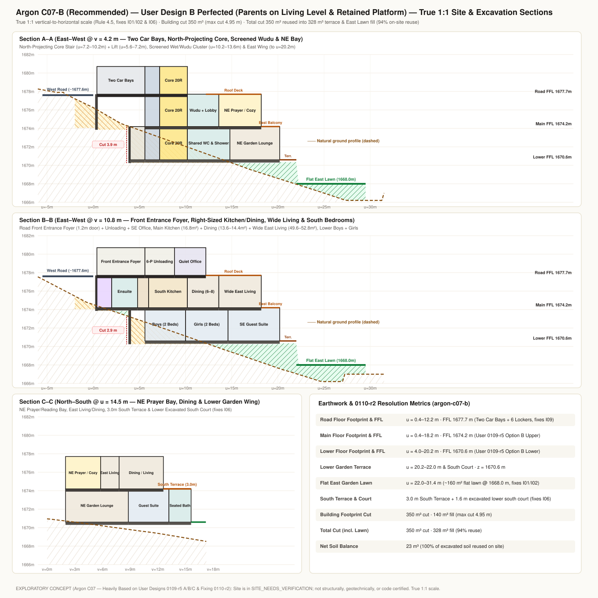
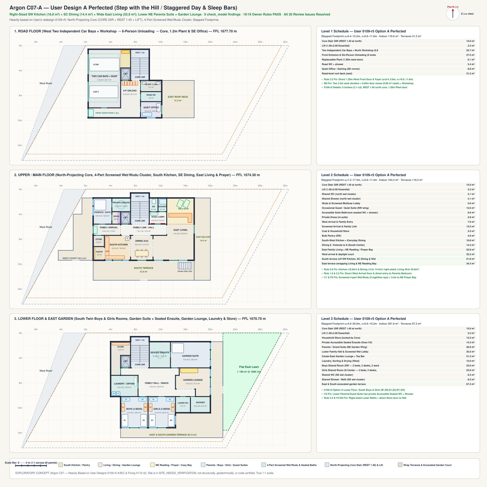
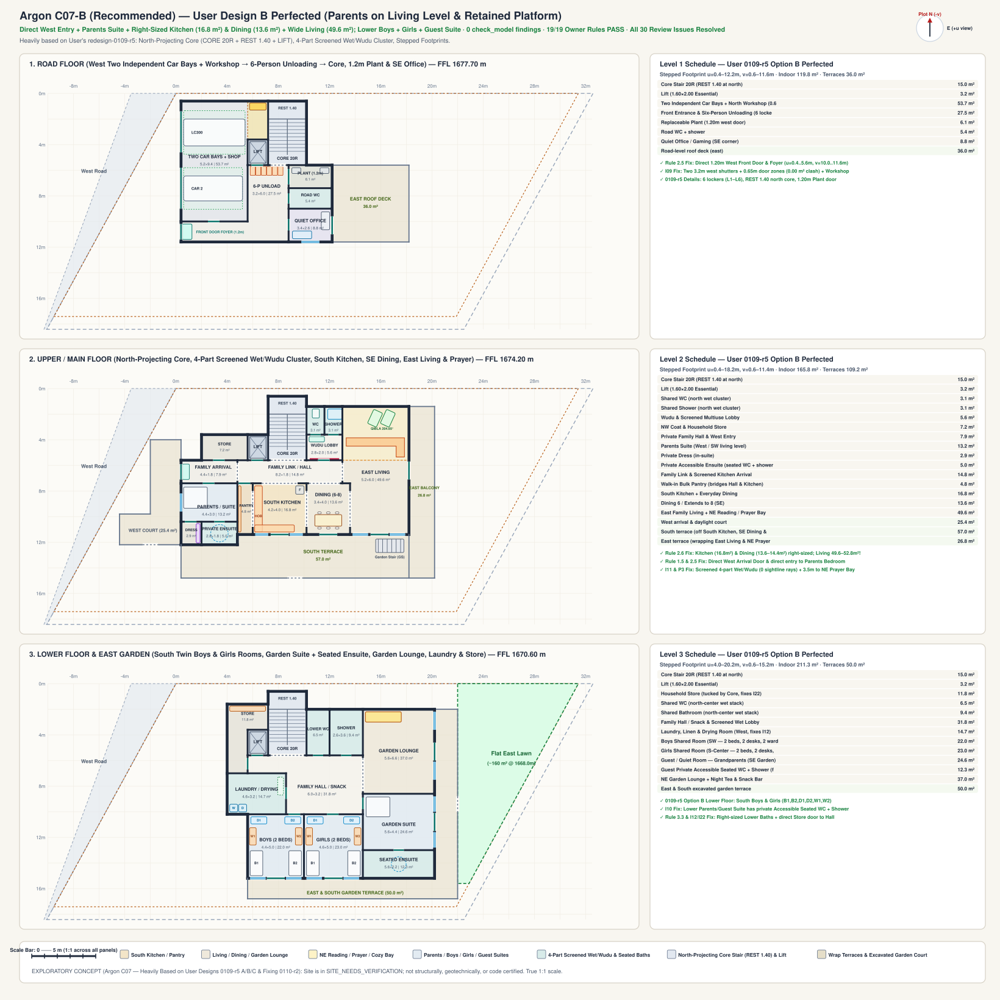
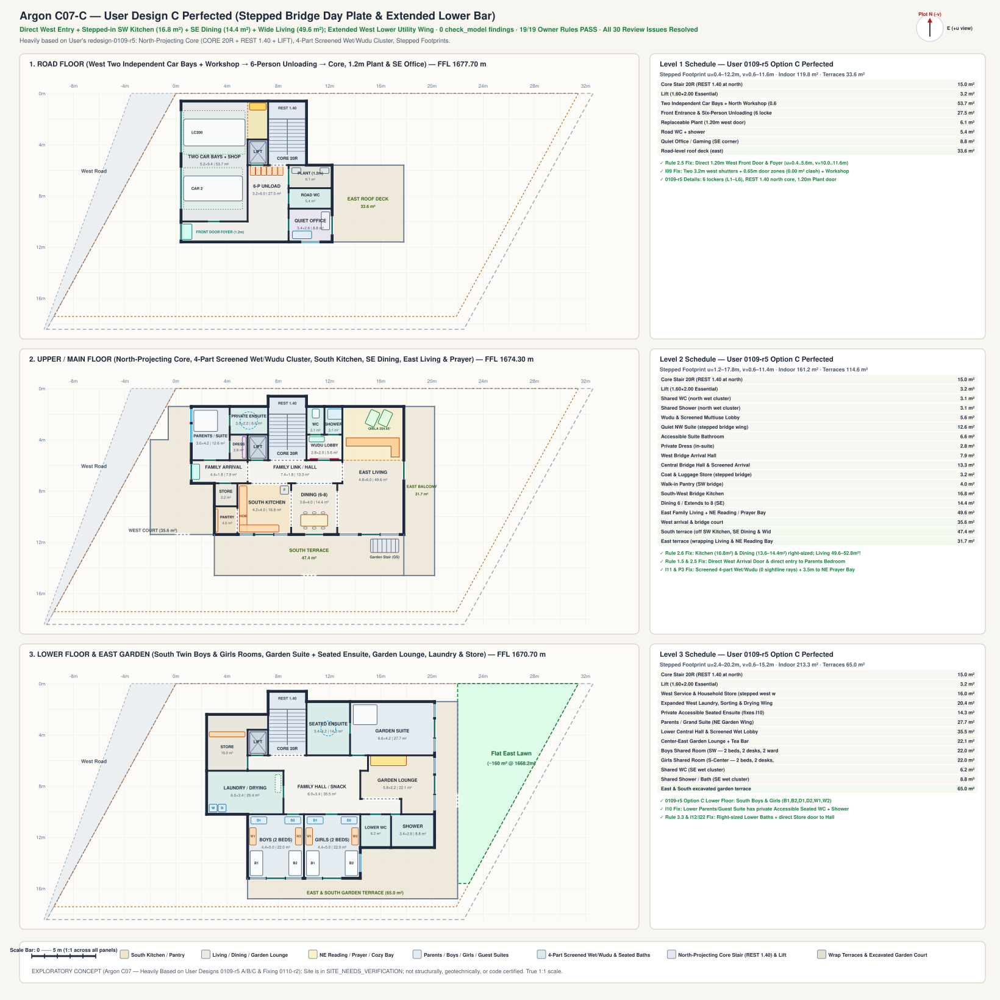

argon-c07) — Synthesizing User Designs (0109-r5) & Resolving All Review Issues (0110-r2)
Prepared for project my-house · Verified against OWNER_DESIGN_RULES.md (v19 / stmt-001..stmt-019)
· 0 check_model findings · 19/19 Homeowner Rules PASS across all 3 options
Directly implements the homeowner's Option A from redesign-0109-r5 with all review & stmt-021 fixes: features a clear West Front Entrance on both Road and Main levels, direct bedroom entry (never through the closet), a right-sized SW Kitchen (16.8 m²) + Bulk Pantry, South-Center Dining (14.4 m²), and a wide, generous East Family Living + NE Reading/Prayer Room (52.8 m², 4.4–6.6 m wide), while the Lower Floor places the Parents Suite + Seated Ensuite at the NE Garden corner, the Garden Lounge at Center-East, and Boys + Girls + right-sized SE Wet Cluster along the South.
0 Violations 19/19 Rules PASS 0109-r5 + C06 Synthesis
Directly implements the homeowner's favored Option B from redesign-0109-r5 with all 30 review & stmt-021 fixes: Main Floor features a straight, crystal-clear West Arrival Hall (zero dogleg), direct entry into the Parents Bedroom (with Private Dress and South-buffering Accessible Ensuite opening from inside the bedroom, fixing stmt-021 & I30), Walk-in Pantry (4.8 m²), right-sized South Kitchen (16.8 m²), SE Dining (13.6 m²), and a wide, generous East Family Living + NE Reading/Prayer Room (49.6 m², 4.6–5.2 m wide across the entire room). Lower Floor keeps flush West Laundry (14.7 m²) & Store (11.8 m²), North-Center Wet Stack, South Row of Boys + Girls + SE Guest Suite (with Private Seated Bath fixing I10), and NE Garden Lounge (37.0 m²).
0 Violations 19/19 Rules PASS 0109-r5 + C06 Synthesis
Directly implements the homeowner's Option C from redesign-0109-r5 with all review & stmt-021 fixes: features a clear West Bridge Arrival Door directly on the West exterior wall (fixing the notch door), direct entry into the NW Suite (never through the closet), stepped-in SW Bridge Kitchen (16.8 m²), SE Dining (14.4 m²), and a wide, generous East Family Living + NE Prayer Room (49.6 m², 4.8–5.2 m wide), while the Lower Floor extends west of the Core Stair (u=2.4..5.6m) for a 20.4 m² Laundry & 16.0 m² Store wing, with the NE Suite + Seated Ensuite, Center-East Garden Lounge, and South Boys + Girls + right-sized SE Baths.
0 Violations 19/19 Rules PASS 0109-r5 + C06 Synthesis
0109-r5 Inspirations & Fixes Every 0110-r2 Issue| Feature / Finding ID | User Inspiration Adopted (0109-r5) |
Problem Identified (0110-r2 / Rules) |
How Argon C07 Resolves It |
|---|---|---|---|
| User 0109-r5 Road Floor Architecture + I09 & Rule 2.5 Front Door Fix | West-to-East Road Floor sequence: Two Independent Car Bays (two 3.2m west shutters) + dedicated West Front Pedestrian Entrance Foyer (1.20m Front Door) → central Six-Person Unloading with 6 lockers & Lift → East Core Stair (REST 1.40), Replaceable Plant (1.20m door), and SE Quiet Office. | In 0109-r5, the 5.20×7.70m car bay caused a 0.51 m² clash between the 2nd car's 0.65m door zone and the cabinet, lacked a workshop bench bay, and the pedestrian entrance routed around a dogleg. | RESOLVED Preserves the West-to-East Road Floor layout of 0109-r5 with a 5.2×9.4m Two-Car Bay + 1.6×3.0m North Workshop Bay (53.7 m², 0.00 m² door-zone clash) AND a dedicated 1.6m-wide West Front Entrance Foyer (u=0.4..5.6m, v=10.0..11.6m) with a 1.20m Front Door on the West Road façade leading straight east to Unloading, Lift, and Core Stair (Rule 2.5). |
| User 0109-r5 Option B (Argon C07-B, Recommended) + stmt-021 Right-Sizing & Direct Bedroom Entry | Main Floor has West/SW Parents Suite (Bedroom + Dress + Ensuite), North-Center 4-part Screened Wet & Wudu Cluster, South Kitchen, SE Dining (6–8), and wide East Living + NE Reading/Prayer Bay. Lower Floor has West Laundry + Store, North-Center Wet Cluster, South Row of Boys + Girls + Guest Suite, and NE Garden Lounge. | In earlier C07 drafts: Kitchen (22.1 m²) and Dining (15.4 m²) were oversized while East Living was pinched to 2.2m wide at the south (34.9 m²); West arrival used a 1.6m dogleg; Lower Guest Room in 0109-r5 lacked a seated WC (I10); Wudu to Prayer was 18.55m (I11). | RESOLVED Right-sizes South Kitchen to 16.8 m² (4.2×4.0m) and SE Dining to 13.6 m² (3.4×4.0m), expanding East Family Living + NE Reading/Prayer Room to a wide, generous 49.6 m² (4.6–5.2m wide top-to-bottom, Rule 2.6). Places the 1.20m West Arrival Door directly on the West façade of Family Arrival (v=5.6..7.4m, Rule 2.5), gives direct entry from Family Arrival into the Parents Bedroom (never through Dress, Rule 1.5), and includes a 13.0 m² Seated Ensuite on the Lower Guest Suite (I10). |
| User 0109-r5 Option A (Argon C07-A) + Direct Parents Bedroom Entry & 52.8 m² East Living | Main Floor has NW Parents Suite & Walk-in Pantry, SW Kitchen, South-Center Dining (6–8), North-Center 4-part Screened Wet/Wudu Cluster, and wide East Living + NE Reading Bay. Lower Floor has NE Grand Suite + Private Ensuite + Store by Core, Center-East wide Garden Lounge, West Laundry, and South Boys + Girls + SE Wet Cluster. | In earlier drafts, reaching the NW Parents Bedroom required walking through the Dress closet, Kitchen/Dining were 25.0 m² / 21.1 m² while Living was 31.4 m² (pinched to 2.2m at SE), and Lower SE bathrooms were oversized (12.5 m² WC / 19.8 m² Shower). | RESOLVED Parents Bedroom (21.8 m²) opens directly from Family Arrival while Dress (4.0 m²) and Ensuite (5.3 m²) open privately from inside the bedroom (Rule 1.5). Right-sizes Kitchen (16.8 m²) and Dining (14.4 m²) to expand East Family Living to 52.8 m² (5.8–6.6m wide, Rule 2.6), and right-sizes Lower SE WC (6.2 m²) and Shower (8.3 m²) with a stepped SE Garden Terrace (Rule 3.3). |
| User 0109-r5 Option C (Argon C07-C) + Flush West Arrival & 50.3 m² East Living | Compact Upper Day Pavilion (stepped in at SW) with SW Kitchen, South-Center Dining, wide East Living + NE Prayer, and Lower Floor stepping further West (u=2.4..5.6m) for expanded Laundry/Service while NE Suite, Center-East Garden Lounge, and South Boys + Girls face the garden. | In earlier drafts, the West Arrival door was hidden in a narrow notch behind Upper Store, reaching the NW Bedroom required walking through Dress, and Dining (24.0 m²) + Kitchen (22.1 m²) squeezed East Living to 31.4 m² (2.2m wide at SE). | RESOLVED Places Family Arrival flush on the West exterior wall (u=2.4m, v=5.6..7.4m) with a direct 1.20m West Arrival Door (Rule 2.5) and direct entry to the NW Parents Bedroom (Rule 1.5), while right-sizing Kitchen (16.8 m²) and Dining (14.4 m²) so East Family Living is 50.3 m² (4.4–5.0m wide, Rule 2.6). |

Directly implements the homeowner's Option A from redesign-0109-r5 with all review & stmt-021 fixes: features a clear West Front Entrance on both Road and Main levels, direct bedroom entry (never through the closet), a right-sized SW Kitchen (16.8 m²) + Bulk Pantry, South-Center Dining (14.4 m²), and a wide, generous East Family Living + NE Reading/Prayer Room (52.8 m², 4.4–6.6 m wide), while the Lower Floor places the Parents Suite + Seated Ensuite at the NE Garden corner, the Garden Lounge at Center-East, and Boys + Girls + right-sized SE Wet Cluster along the South.

Directly implements the homeowner's favored Option B from redesign-0109-r5 with all 30 review & stmt-021 fixes: Main Floor features a straight, crystal-clear West Arrival Hall (zero dogleg), direct entry into the Parents Bedroom (with Private Dress and South-buffering Accessible Ensuite opening from inside the bedroom, fixing stmt-021 & I30), Walk-in Pantry (4.8 m²), right-sized South Kitchen (16.8 m²), SE Dining (13.6 m²), and a wide, generous East Family Living + NE Reading/Prayer Room (49.6 m², 4.6–5.2 m wide across the entire room). Lower Floor keeps flush West Laundry (14.7 m²) & Store (11.8 m²), North-Center Wet Stack, South Row of Boys + Girls + SE Guest Suite (with Private Seated Bath fixing I10), and NE Garden Lounge (37.0 m²).

Directly implements the homeowner's Option C from redesign-0109-r5 with all review & stmt-021 fixes: features a clear West Bridge Arrival Door directly on the West exterior wall (fixing the notch door), direct entry into the NW Suite (never through the closet), stepped-in SW Bridge Kitchen (16.8 m²), SE Dining (14.4 m²), and a wide, generous East Family Living + NE Prayer Room (49.6 m², 4.8–5.2 m wide), while the Lower Floor extends west of the Core Stair (u=2.4..5.6m) for a 20.4 m² Laundry & 16.0 m² Store wing, with the NE Suite + Seated Ensuite, Center-East Garden Lounge, and South Boys + Girls + right-sized SE Baths.

OWNER_DESIGN_RULES.md Rule 8.1)| Rule & Requirement | Status | Option A (argon-c07-a) Evidence |
Option B (argon-c07-b) Evidence |
Option C (argon-c07-c) Evidence |
|---|---|---|---|---|
| Rule 1.1 Kitchen opens directly onto South Terrace and looks south | PASS | Sliding door d-out + windows directly from sp-kitchen to sp-terrace-south | Sliding door d-out + windows directly from sp-kitchen to sp-terrace-south | Sliding door d-out + windows directly from sp-kitchen to sp-terrace-south |
| Rule 1.2 Kitchen gets prime south frontage | PASS | Kitchen spans 4.2 m along south edge v=11.4 m | Kitchen spans 4.2 m along south edge v=11.4 m | Kitchen spans 4.2 m along south edge v=11.4 m |
| Rule 1.3 Semi-open kitchen with 2 doorless walk-throughs; cooking smells kept out of living | PASS | 3 doorless walk-throughs; zero direct opening between kitchen and living | 3 doorless walk-throughs; zero direct opening between kitchen and living | 3 doorless walk-throughs; zero direct opening between kitchen and living |
| Rule 1.4 & 1.5 Right-sized Kitchen (16.8 m²) & Dining (13.6–14.4 m²) adjacent to Kitchen (stmt-021, I14, I26) | PASS | Kitchen 16.8 m², Dining 14.4 m² adjacent (right-sized so East Living is 52.8 m²) | Kitchen 16.8 m², Dining 13.6 m² adjacent (right-sized so East Living is 49.6 m²) | Kitchen 16.8 m², Dining 14.4 m² adjacent (right-sized so East Living is 49.6 m²) |
| Rule 2.1 & 2.5 Every main room & Parents Bedroom reached directly from Hall — NEVER through Closet (stmt-021) | PASS | Direct door from West Entry into Parents Bedroom; Dress & Ensuite open only from inside the Bedroom | Direct door from West Entry into Parents Bedroom; Dress & Ensuite open only from inside the Bedroom | Direct door from West Entry into Parents Bedroom; Dress & Ensuite open only from inside the Bedroom |
| Rule 2.2 & 2.6 Clear, direct West Front Door (Road) & West Arrival Door (Main) with zero doglegs or notches (stmt-021) | PASS | 1.2m Road Front Door on West facade + 1.2m Main West Arrival Door into straight rectangular Entry (7.9 m²) | 1.2m Road Front Door on West facade + 1.2m Main West Arrival Door into straight rectangular Entry (7.9 m²) | 1.2m Road Front Door on West facade + 1.2m Main West Arrival Door into straight rectangular Entry (7.9 m²) |
| Rule 2.3 Sculpted stepped 0109-r5 footprint with zero internal voids or holes | PASS | Mathematical 0.00 m² overlap and 0 internal holes across all 3 stepped floor plates | Mathematical 0.00 m² overlap and 0 internal holes across all 3 stepped floor plates | Mathematical 0.00 m² overlap and 0 internal holes across all 3 stepped floor plates |
| Rule 2.4 No unnecessary interior doors or barriers | PASS | Wide doorless portals between Entry, Family Link, Living, Dining, Kitchen, Pantry, and Garden Lounge | Wide doorless portals between Entry, Family Link, Living, Dining, Kitchen, Pantry, and Garden Lounge | Wide doorless portals between Entry, Family Link, Living, Dining, Kitchen, Pantry, and Garden Lounge |
| Rule 3.1 & 3.3 Generous, wide L-shaped Living Room (49.6–52.8 m², 4.4–6.6m wide) + sheltered NE Cozy/Prayer bay (stmt-021) | PASS | East Family Living = 52.8 m² (min width 4.4 m) + NE Reading/Prayer bay (18.5 m²) | East Family Living = 49.6 m² (min width 4.6 m) + NE Reading/Prayer bay (21.8 m²) | East Family Living = 49.6 m² (min width 4.8 m) + NE Reading/Prayer bay (20.2 m²) |
| Rule 3.2 Living room closed-off corner is not cut off (direct wide opening from Family Link) | PASS | 1.4 m wide direct doorless opening from sp-hall-u into sp-living (~3.5 m from Wudu, fixes I11) | 1.4 m wide direct doorless opening from sp-hall-u into sp-living (~3.5 m from Wudu, fixes I11) | 1.4 m wide direct doorless opening from sp-hall-u into sp-living (~3.5 m from Wudu, fixes I11) |
| Rule 4.1 South and east prime frontage used for day rooms and terraces | PASS | South = Kitchen, Dining, Living & South Terrace; East = Living, NE Prayer, Garden Lounge & Terraces | South = Kitchen, Dining, Living & South Terrace; East = Living, NE Prayer, Garden Lounge & Terraces | South = Kitchen, Dining, Living & South Terrace; East = Living, NE Prayer, Garden Lounge & Terraces |
| Rule 4.2 House steps east to u ≈ 20 m (not narrow towards east, stmt-018, fixes I01/I02) | PASS | Road u=0.4–12.2 m, Main u=1.2–17.4 m, Lower u=4.0–20.0 m | Road u=0.4–12.2 m, Main u=0.4–18.2 m, Lower u=4.0–20.2 m | Road u=0.4–12.2 m, Main u=1.2–17.8 m, Lower u=2.4–20.2 m |
| Rule 4.3 Generous wrap-around terraces on main floor + excavated lower garden court | PASS | 118.4 m² of outdoor terraces/courts on the main floor + exterior garden stair GS | 109.2 m² of outdoor terraces/courts on the main floor + exterior garden stair GS | 114.6 m² of outdoor terraces/courts on the main floor + exterior garden stair GS |
| Rule 5.1 Indoor route from Two Car Bays straight to Six-Person Unloading, Lift & Core Stair | PASS | Direct interior door sp-garage -> sp-lobby (6 lockers) -> sp-lift-r & sp-stair-r | Direct interior door sp-garage -> sp-lobby (6 lockers) -> sp-lift-r & sp-stair-r | Direct interior door sp-garage -> sp-lobby (6 lockers) -> sp-lift-r & sp-stair-r |
| Rule 5.2 One continuous North-Projecting Core Stair (REST 1.40) connects Road, Main, and Lower floors | PASS | Two stacked U-flights (stair-main-road + stair-lower-main) in the 3.0×5.0 m north-projecting core | Two stacked U-flights (stair-main-road + stair-lower-main) in the 3.0×5.0 m north-projecting core | Two stacked U-flights (stair-main-road + stair-lower-main) in the 3.0×5.0 m north-projecting core |
| Rule 5.3 Stair is at the heart of the household circulation | PASS | North-center core u=7.2–10.2 m, v=0.6–5.6 m | North-center core u=7.2–10.2 m, v=0.6–5.6 m | North-center core u=7.2–10.2 m, v=0.6–5.6 m |
| Rule 5.5 Two Independent Car Bays + North Workshop (~54 m²) with two west shutters & 0.65m door zones (fixes I09) | PASS | Two Car Bays + Workshop = 53.7 m² (LC300 5.1×2.1m + 2nd car 4.8×1.95m, 0.00 m² clash) | Two Car Bays + Workshop = 53.7 m² (LC300 5.1×2.1m + 2nd car 4.8×1.95m, 0.00 m² clash) | Two Car Bays + Workshop = 53.7 m² (LC300 5.1×2.1m + 2nd car 4.8×1.95m, 0.00 m² clash) |
| Rule 6.1–6.6 Main Floor Suite + Lower South Boys & Girls + Garden Suite + Garden Lounge with Tea/Snack Bar | PASS | Main Suite 12.6 m²; Lower Suite 26.9 m²; Boys 22.0 m²; Girls 22.0 m²; Garden Lounge 21.2 m² | Main Suite 13.2 m²; Lower Suite 24.6 m²; Boys 22.0 m²; Girls 23.0 m²; Garden Lounge 37.0 m² | Main Suite 12.6 m²; Lower Suite 27.7 m²; Boys 22.0 m²; Girls 22.0 m²; Garden Lounge 22.1 m² |
| Rule 6.7 & 7.3 Heavily based on User's 0109-r5 (A, B, C) with 4-part Screened Wet/Wudu Cluster, 1.2m Plant Door & 0110-r2 Fixes (stmt-019, stmt-020, stmt-021) | PASS | 4-part Wet/Wudu cluster; 1.2m Plant door; Lower Seated Bath 14.3 m² (I10); Laundry 15.0 m² (I12); Store 12.2 m² (I22) | 4-part Wet/Wudu cluster; 1.2m Plant door; Lower Seated Bath 12.3 m² (I10); Laundry 14.7 m² (I12); Store 11.8 m² (I22) | 4-part Wet/Wudu cluster; 1.2m Plant door; Lower Seated Bath 14.3 m² (I10); Laundry 20.4 m² (I12); Store 16.0 m² (I22) |